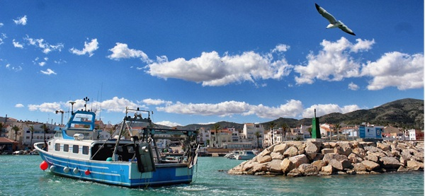

Los pueblos más bonitos de Cataluña
Los pueblos más bonitos de Cataluña
Los pueblos más bonitos de Cataluña
Los pueblos más bonitos de Cataluña

Les Cases d'Alcanar
Les Cases d’Alcanar es el último de la costa catalana hacia el sur. Cuenta con una oferta gastronómica excelente y variada, con una playa que nunca se masifica y con el precioso Delta del Ebro a pocos pasos.
La primera línea de mar no se ha visto modificada y una de las mejores actividades que se pueden hacer es ir andando hasta la desembocadura del río Sènia. En donde en otros pueblos hay hoteles, aquí encontramos huertos.
Según MilViatges.com,es uno de los pueblos costeros más bonitos de Cataluña y de todo el Mediterráneo.